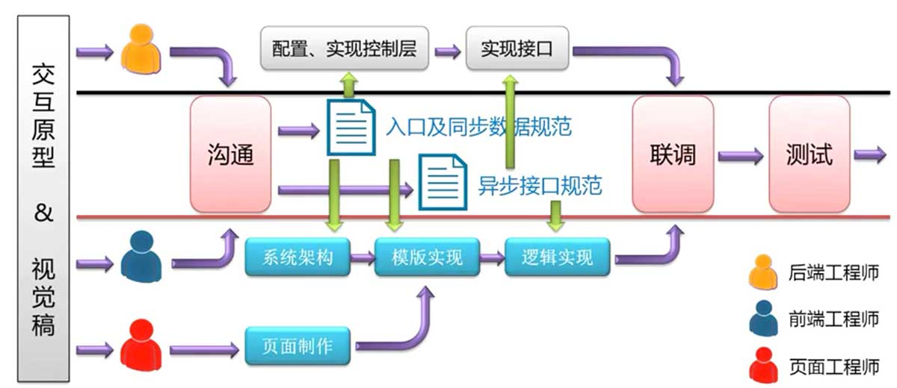

前端项目规划与团队管理
在职业生涯的发展中，我们不仅会涉及到编码. 做技术，也会和团队建设与项目规划打交道。一个项目不是简单的打开编辑器写代码，一个好的项目一定是在开始之前就进行了严格的项目规划与团队内部建设。今天我们要罗列一下前端项目初期阶段所需要进行的工作。
1. 团队编码规范：
主要指的是团队成员的编码规范，一般的项目周期少则几个月多则几年，在项目推进的过程中不免有人要离开，又新的人加入到队伍当中。如果团队没有一套统一的编码规范，在项目的后期维护上会消耗巨大的人力和时间等资源。
注释规范：
块状注释、单行注释、行内注释。块状注释要统一缩进，并且标注在特定对象的上方；单行注释的文字两端需要留出空格（防止注释编码导致注释关闭符失效），也要标注在特定对象的上方；行内注释的文字两端需要留出空格，并且放在语句的分号后边。
文件规范：
文件分类、文件引入、文件本身。文件分类主要指将资源文件按照业务或功能进行文件夹分类；文件引入指 CSS 文件的引入方式，行内样式不推荐，外联引入和内联引入；文件本身包括文件的命名（下划线大小写），文件编码（UTF8）。
命名规范：
分类命名、命名格式、语义化命名。分类命名中可以通过分类来对 CSS 类进行命名，比如 “g-” 前缀代表全局类，“m-” 前缀代表模块类；命名格式，建议全部小写，对命名长度进行衡量，要一眼能够看出名字的意义；语义化命名，以内容语义来命名 CSS 类名。
书写规范：
单行多行、空格分号、属性顺序、Hack 方式、值格式。单行多行，CSS 的单行多行各有利弊；空格分号，CSS 多行书写必须缩进，单行书写在属性名冒号和结尾分号之后加入空格，每一条规则都要以分号结尾；属性顺序，先写显示顺序，后写盒模型相关属性，文本属性，修饰属性；Hack 方式：统一各种浏览器的 Hack 方式；值格式：比如 color 属性的取值使用十六进制格式，url 属性的值是否带单引号或双引号。
其他规范：
HTML 规范、图片规范。HTML 的文档声明，使用 H5 的标准声明，遵循 XHTML 规范闭合标签，标签属性名用双引号还是单引号；标签缩进，正确的分层；标签和属性均小写；资源文件具有语义性，图片保留源文件。
2. 团队协作流程：
Web 产品初期的分工方式：
- 视觉/交互团队；
- 后端开发；
Web 产品后期的分工方式：
- 交互团队；
- 视觉团队；
- 前端团队（页面工程师 + 交互工程师）；
- 后端团队；
- 产品团队；
- PMO 团队（负责制定和维护项目进度）；

评论 | Comments